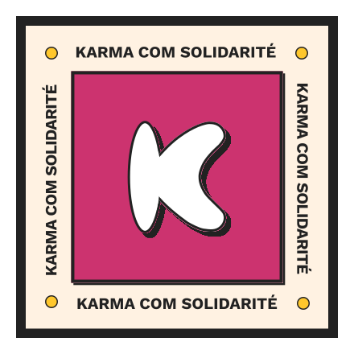
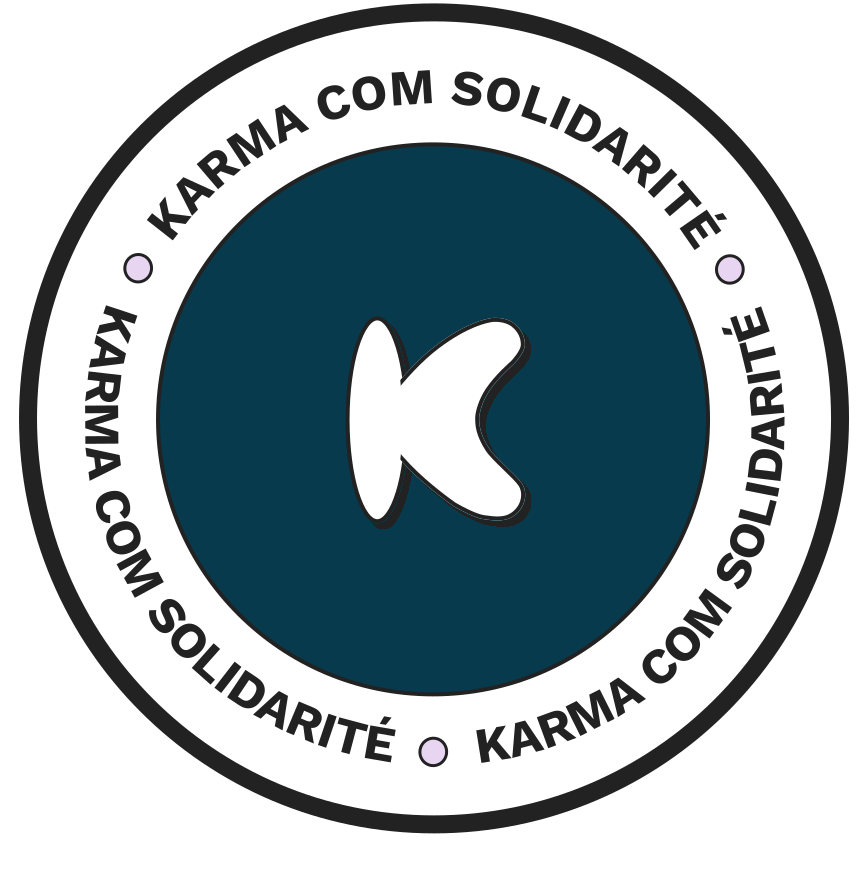

Un système de design partagé par toute l'organisation — pour que chaque bénévole, chaque support, chaque écran raconte la même histoire.

Chaque bénévole fait de son mieux. Mais sans référence commune, les résultats divergent. Voici ce qui arrive en l'absence de Design System.
Chaque flyer, chaque post, chaque présentation utilise des couleurs et polices différentes. Le logo apparaît déformé, rogné, sur fond incompatible. L'identité KCS devient illisible.
Chaque nouveau bénévole repart de zéro : "c'est quoi notre couleur exactement ?", "quelle police on utilise ?", "j'ai le bon logo ?". Des heures perdues à rechercher des réponses qui devraient être évidentes.
Texte blanc sur fond jaune, contraste insuffisant, focus ring absent : sans règles explicites et vérifiées automatiquement, on exclut sans le vouloir une partie de notre public.
Qui a le droit de changer une couleur ? Qui valide un nouveau composant ? Sans processus clair, les décisions sont informelles, les régressions invisibles, la marque vulnérable.
Le Design System KCS centralise les décisions de marque : couleurs, typographie, composants, règles d'accessibilité. Et un outillage automatisé garantit qu'elles sont respectées.
Chaque couleur a un rôle précis. Les utiliser correctement c'est respecter la marque — et garantir que tout le monde vous lit bien.
Work Sans pour l'impact et la lisibilité. Lexend Deca pour les contextes qui demandent une accessibilité renforcée (dyslexie, basse vision).
17 composants prêts à l'emploi. Certains sont interactifs ici — essayez-les.
Ces 4 règles sont non-négociables. Elles protègent l'accessibilité et la cohérence de la marque. La CI les vérifie automatiquement.
color: white;
background: #FFC300color: #222222;
background: #FFC300color: #000000color: #222222box-shadow:
0 4px 16px rgba(0,0,0,0.2)box-shadow:
4px 4px 0 0 #222222outline: noneoutline: 3px solid #222;
outline-offset: 3pxLe DS est un bien commun, pas un projet solo. Chaque modification suit un circuit clair — pour protéger la marque sans bloquer la contribution.
Vous n'avez pas besoin de mémoriser toutes les règles. 5 scripts les vérifient à chaque commit, automatiquement.
skill/kcs-claude-design-skill.md contient toutes les règles de marque résumées. 10 minutes de lecture, une semaine de cohérence gagnée.Le DS vit sur GitHub. Tout le monde peut le consulter, proposer des améliorations, et l'utiliser comme référence.

Design System v1.1.0 · Karma Com Solidarité · Avril 2026